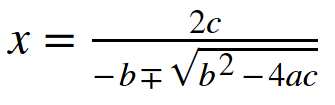
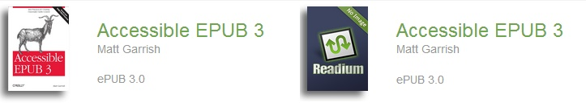

The most recognizable part of an EPUB to readers is the content itself, so it’s not surprising that many of the integral components that make up an EPUB are often overlooked and the conclusion drawn that the format is simply what gets rendered. EPUB is not just a website in a box, though, as you’ve seen in the last couple chapters. Content is one piece of a much larger puzzle.
The journey through EPUB content is actually going to be spread out across a number of chapters. This one aims to provide a general overview of content documents, covering the major features and additions in EPUB 3, as well as the CSS profile.
The following chapters will then build on this foundation by looking in more detail at how to embed fonts, use the new audio and video multimedia elements, create media overlays for synchronizing audio with text, add scripted interactivity, include global language support, and finally wrap up content by covering accessibility concerns, which is where many of the best practices for marking up your content will be laid out. In other words, by the time you’ve worked your way through the heart of this book, you should be well versed in the features and functionality at your disposal.
Before plunging too far into content, a good grounding in the language of EPUB resources will be helpful to the coming discussions. EPUB has a rich lexicon when it comes to content, and each term has a specific meaning. When reading over the specification, it sometimes seems to have an unlimited number of these definitions: publication resources, core media type resources, foreign resources, EPUB content documents, XHTML content documents, SVG content documents, scripted content documents, and top-level content documents.
There is a method to the seeming madness, though. A publication resource, for example, is any resource that contributes to the rendering of an EPUB, whether a content document, a style sheet, audio and video clips, fonts, etc. Publication resources are divided into two types: core media type resources and foreign resources. A core media type is one that is required to be supported by EPUB 3 reading systems, and a foreign resource is one that is not. MP3 and AAC-LC (MP4) audio files are core media types, for example, because a compliant reading system must be able to play them back for you. Ogg Vorbis and Speex audio files are foreign resources, because the same is not true of them.
There’s nothing stopping you from including Ogg Vorbis audio files in your EPUB, but because support cannot be guaranteed, foreign resources require a core media type fallback to be included as well (e.g., an equivalent MP3-encoded file). That’s the key to EPUB that you’ll continue to see throughout this book: there always must be a way to render the content according to the conventions.
The EPUB specification also distinguishes between publication resources and content documents. Content documents are unique in EPUB, because they are the only core media type resources allowed to be referenced in the spine without needing a fallback. All reading systems must support two types of content document, XHTML and SVG, which will be discussed later in this chapter.
But to repeat the pattern of publication resources, you are not required to use only XHTML and SVG content documents in the spine; they’re just the only ones that are guaranteed to render. You could include a DocBook file, a DTBook file, a PDF, or any other document format, but you’d also have to include a fallback XHTML or SVG equivalent. You can even reference other core media types from the spine, like JPEG or PNG images, but you still need an XHTML or SVG fallback for them. You’ll learn how to create fallbacks later in Fallback Content.
And finally, the specification subcategorizes certain important types of content documents. A scripted content document, as its name suggests, is any SVG or XHTML content document that contains JavaScript (whether directly or embedded via an iframe). A scripted content document also includes HTML5 form elements, but this use sometimes causes confusion, because form elements can appear in a document without any scripting in it (e.g., the details element). The use of a single identifier simplifies the metadata process, as the goal is to identify a document with potentially unsupported interactive features.
The other subcategory is top-level documents, which are referenced in the spine, as opposed to being included in another document via an iframe element, for example. Later in the book, when we get to scripting in Chapter 7, you’ll see why this designation exists, because it’s tied to what you are allowed and not allowed to do with script.
Easily the biggest change in EPUB 3 is the addition of XHTML5, but its inclusion overshadows the fact that it is now the sole text markup grammar natively supported (gone is DTBook as an option). DTBook’s removal should not be missed, though, because the additional markup richness that it supported for accessible ebooks is now accommodated without the need for a separate grammar. If you take full advantage of the new elements added to HTML5, and combine them with the new accessibility and semantic markup features (like the epub:type attribute, shown in epub:type and Structural Semantics), you can make publications even richer and more accessible than you could using DTBook in EPUB 2.
The branching of HTML that resulted in HTML4 and XHTML 1.1 coexisting as separate specifications has also been undone in HTML5, with a single specification now defining both the XML and non-XML versions. EPUB 3 adopts the elements and attributes defined in this specification, but it retains the XML tagging conventions (called the XML serialization of HTML5, or XHTML5 for short). In other words, don’t go looking for a separate document that defines XHTML5, because the definitions all come from the same specification. What you can use in HTML5 you can use in XHTML5, but we’ll cover a few restrictions to what EPUB supports as we go.
What this means to you as a content creator is that all the old familiar XML requirements remain in place, even if they aren’t all spelled out in the HTML5 element and attribute definitions:
</p> tags, but this practice is not allowed in XHTML).
<br> in HTML must be self-closing (include a trailing slash before the closing bracket) in XHTML: <br/>
&.
But unlike XML, you aren’t bound to the old id attribute naming convention anymore. In XHTML 1.1, your IDs had to begin with a letter. But short of not using spaces, anything goes in HTML5 IDs (except each one still has to be unique). That said, for compatibility with EPUB 2 reading systems, the best practice is to keep using the XML naming convention.
And always remember, if your content does not adhere to the XML rules, your readers are likely to see either an ugly parsing-error message displayed when they load the document or nothing at all (i.e., a blank page). As long as you run the epubcheck validator on your content (covered in Chapter 11), none of these problems will slip through and ruin your readers’ days.
Key among the additions to HTML5 for document publishing are the new structural elements. Where previous versions only had the generic div element to group content, you can now properly identify the major structural sections of your document using these tags:
section
The section element is used to group primary sections of your document, such as prologues, forewords, parts, chapters, indexes, and bibliographies. This tag finally gives structure to the sea of loosely grouped content that had been HTML. In the past, the only way to indicate a new section in HTML was through a numbered heading, and even then the abuse of headings for styling instead of structure made them confusing. Content that constituted a section might be wrapped in a div tag, but div tags were largely meaningless and overused containers that could mean just about anything.
Using the section element, you can explicitly define the hierarchical structure of your document, where each section typically corresponds to an entry you would place in your table of contents (although in the case of traditional front matter, this correlation to the table of contents can’t always be made). Even if you’ve split your publication up so that each document contains only a single section of content, it is still advisable to wrap it in a section tag:
<body><sectionepub:type="chapter">...</section></body>
Being overt in your tagging leaves no ambiguity about why the content exists in your publication. The epub:type attribute allows you to be even more specific about the nature of the section, as you’ll see in more depth later in the chapter.
article
If you’re tagging a magazine, newspaper, journal, or similar article-based publication, the article tag is the more semantically correct alternative to a section. Both play a similar content structuring role, but article is designed for self-contained publications within your publication:
<article><h1>A brief history of time</h1><pclass="byline">By Prof. Farnsworth</p>...</article>
If the article has a hierarchical structure of its own, you can use section tags within the article to delineate each part:
<article>
<h1>A brief history of time</h1>
<section>
<h2>In the beginning...</h2>
...
</section>
...
</article>Articles can also be embedded within a section.
aside
The aside element is a particularly useful addition, because it provides a meaningful way to differentiate primary content from secondary. If you’re tagging all your chapters using section tags, you don’t also want to tag all your sidebars the same way, as you lose the structure of your document and obscure the narrative from users of assistive technologies:
<asideepub:type="sidebar"><h1>Roman Empire Timeline</h1>...</aside>
And similar to the article element, an aside can have a structure all its own:
<aside epub:type="sidebar">
<h1>The Seasons</h1>
<section>
<h2>Winter</h2>
...
</section>
...
</aside>The aside element can also be used for annotations and footnotes:
<aside id="c01-en01" epub:type="endnote"> <p>1. This argument was first presented in ...</p> </aside> <aside id="c01-en02" epub:type="endnote"> <p>2. The Holy Roman Emperor ...</p> </aside>
nav
The nav element isn’t quite as sexy as the previous elements, because its primary use is to group lists of navigation links. Its role on the Web is to reduce the clutter of navigation aids that adorn websites, but it also can play a role in publishing in tidying markup. Although the nav element’s primary use in EPUB is in the navigation document (as discussed in Chapter 2), it can also be used to embed tables of contents at the beginning of each section:
<nav><h2>Quick Guide</h2><ol><li><ahref="#intro">Introduction</a></li><li><ahref="#pt">Particle Theory</a></li>...</ol></nav>
You can also use it to tag supplementary lists of links within your content:
<nav><h2>See Also</h2><ul><li><ahref="http://idpf.org/epub/30/">EPUB 3</a></li>...</ul></nav>
The structure elements are not the only way that HTML5 improves the ability to distinguish areas of content in your document. You can also use the header and footer elements to define the corresponding regions within sections. Although typically associated with web page headers and footers, the semantics of prefatory and supplementary material for a page applies equally to documents.
header
section can have a block of header material. The header element is not usually needed when a page contains only a single heading, but it could be used to group prefatory content before the body of the section, such as an epigraph or an author bio:
<header><h1>Chapter 1</h1><blockquote><p>&that no man remember me.</p><cite>The Mayor of Casterbridge</cite></blockquote></header>
footer
footer element can group information that is ancillary to the section. You could add all your endnotes to this element, for example:
<footer><asideepub:type="rearnote"id="c01-en01"><p>1. ...</p></aside><asideepub:type="rearnote"id="c01-en02"><p>2. ...</p></aside></footer>
HTML5 also includes another new element for distinguishing supplementary content, the figure element:
<figureid="fig01"><figcaption>Table 1: Facts and Figures</figcaption><table>...</table></figure>
Chapter 9 covers this element in more detail, but in short, it allows figures, whose placement is not central to the primary narrative, to be included wherever they need to appear in the markup for visual rendering, while still distinguishing that they are not part of the logical reading order. The figcaption element is another useful addition that allows the caption to be determined programmatically, regardless of its position in the content (HTML5 requires that it must be either the first or last element in the figure).
HTML5 includes a number of other new elements, including these that will be covered in more detail in the coming chapters:
audio and video
ruby and rt
bdo
wbr
mark
time
And a number of new form elements and input types have been added to show progress bars and output, create data lists, etc.
HTML5 also more clearly defines the semantics of a number of other elements:
em
strong
i
b
hr
small
big has been dropped from the grammar)
Covering every element in the specification is beyond the scope of this book, because there are many more that haven’t changed between versions. If you want more information, the W3C maintains an HTML5 change document that is worth the time to skim through.
But before moving on, some special cases are also worth noting. First, there are a couple of elements that regularly cause confusion:
cite
address
article or body element. By this definition, the only realistic use in a book would be to tag the publisher’s location.
Whether these element definitions will stand the test of time remains to be seen. To strictly adhere to the specification, this is how they should be used, but misuse of either for their more general meanings is also unlikely to cause any issues in ebooks, or for accessibility.
And second, there are some elements you may want to avoid, or use sparingly:
embed
object tag should be used instead.
rp
rp element for adding fallback parentheses.
hgroup
The W3C has put the HTML5 specification on a fast track to recommendation by 2014, but until it is finalized, there’s always going to be some possibility of change, both in terms of additions and deletions. Part of the plan the W3C has established to publish the standard has been to take the most contentious issues and evolve them as separate sub-specifications, as is being done with hgroup. As a result, some feature that appeared to be out of HTML5 could resurface, such as the longdesc attribute, as groups define specification documents for them. The choice could then be made by the EPUB 3 working group in future revisions of the specification whether to support these additions as add-on modules and/or to pursue other options.
In addition to the remaining support issues as HTML5 matures, you also need to be aware that there isn’t a single universal concept of what constitutes a reading system. A number of features that can be used in, and with, content documents are optional, meaning that you shouldn’t take for granted that everything you can do in EPUB 3 will work in every reading system.
Most notably, support for all of the following is optional:
The scripting abilities you’ll find in any given reading system may prove to be the most perplexing from a content creation perspective, certainly when trying to achieve consistency of rendering across devices. Using progressive enhancement techniques is strongly recommended to ensure a baseline for rendering, but Chapter 7 and Chapter 9 will cover these issues in more detail.
Also, because HTML5 is liberal in terms of where and how you can use form elements, it’s easy to forget that EPUB 3 reading systems may not support them. The details element, for example, is useful for collapsing a description that accompanies an image. But, if you use this method, there is a chance it won’t work on those reading systems that choose not to support form elements.
Inevitably, you’re going to have to decide if the functionality provided is more important than potential rendering issues on some segment of reading systems. So far, most of these features have been supported, with some bugs and quirks considering the stage of development to this point. Only support for the text-to-speech enhancements hasn’t appeared, so there is a small risk to including that functionality.
In addition to changes to the elements, HTML5 has also made a more fundamental change to the way that HTML documents are recognized and validated in abandoning DTDs for defining the markup structure. The doctype statement, which used to point to the DTD your document conformed to, has been retained for identification purposes, but it has been stripped down to just identifying the root element:
<!DOCTYPE html>This doctype is recommended for regular HTML5 pages but is optional in XHTML5. You may still want to include the new doctype, however, because without it there is no way to distinguish individual content files from XHTML 1.1. If you use XML tools to work on your files, for example, they may report erroneous errors without the doctype.
Including a doctype is recommended in the WhatWG HTML/XHTML comparison page to avoid quirks mode in browsers, but that’s guidance for creating HTML pages that can render optimally as either HTML or XHTML. Unless you’re expecting your content to be consumed as HTML (outside of a reading system), it should not be required.
That is, it should not because the EPUB 3 specification requires that compliant reading systems render the content as application/xhtml+xml. Developers often disregard specifications, and since there’s no harm in including the doctype, it’s worth getting in the habit of always inserting it.
The other notable technical change that comes with dropping DTDs is that the HTML named entities are no longer supported. If you’re used to adding — to your XHTML content instead of the actual Unicode character or the numeric entity —, you’re not going to enjoy the new world order that now requires you to choose one of those two options.
For the data architects out there, before thinking you can revive them as an external library pulled in through the doctype, note that EPUB 3 forbids external identifiers. Short of creating an entity definition for every needed named entity in every file that uses them, resuscitation is a lost cause.
Linking and referencing are easy to mix up, but there is a key distinction to be made in EPUB. Linking is the activity of providing the reader with the ability to traverse to some new content, whether a location in the current publication or an address on the Web. Links are created using the HTML a element, with the href attribute pointing to the destination. You’re free to link to anything you want. If you link to a content document in the container, the reading system will open it in the application. If you link to external resources, a new browser window will typically be launched.
Referencing is more complex, because it involves bringing the referenced resource into the current document, whether an image to display, an audio clip to listen to, a CSS style sheet to visually render the content, etc. You can reference content from a variety of different tags (audio, video, iframe, link, object, and script), but referenced resources must be included in the container. In other words, you cannot pull content into your document that lives on the Web.
The exception is audio and video, but those are covered in detail in Chapter 5.
Linking and referencing in EPUB content documents is done almost exactly as it is on the Web, except you always use relative paths for content in your publication and full paths for resources outside it.
Relative paths are created in relation to where the referencing document is in the container, not to the root of the container. For example, if you had the file chapter01.xhtml in the directory EPUB/xhtml and your style sheets in the directory EPUB/css, all style sheet link elements in the document would reference up one level and then down into the css directory:
<linkrel="stylesheet"type="text/css"href="../css/epub3.css"/>
You cannot use absolute path references, such as /EPUB/css/, because the concept of a web root does not exist in EPUB, so there is no guarantee how they will be resolved. Using a leading slash is not the equivalent of starting at the container root, and doing so will typically result in an invalid reference when running epubcheck.
Also be aware that there is nothing special about the directory where you house your content. Although you will typically store an entire rendition in a single directory, you’re free to locate and reference resources outside this default folder. If you have a publication that contains both an SVG and XHTML rendition, for example, instead of picking one or the other directory for housing common resources and then setting up relative linking across renditions, you can create shared folders off the root (for example, a common fonts folder). This scenario is where absolute path references would be really helpful, but you have to use the parent directory operator (..) to step back to the root. Granted, this is a bit of future knowledge, because rendition mapping is still in the early stages of development.
Canonical Fragment Identifiers (epubcfis for short) is a new kind of linking in EPUB. You don’t have to know how these work in order to link to content in your documents (you’ll typically be using URIs), but some understanding of them doesn’t hurt, either. Reading systems must support them now, and the more you delve into the guts of EPUBs, the more you’re likely to bump into them or hear people talking about them.
One of the prime limitations of EPUBs, as far as referencing them goes, has been the lack of a universal way to locate any arbitrary point within one, especially from outside one (e.g., to link from a web page into a specific point). With URIs, you can specify a resource and also point to an element within it (via its id), but that works only when you’re in the EPUB and can find the other resources relative to the current one. If all you have is a zipped-up EPUB, how do you get from the outside in?
If you’re a reading system developer trying to implement random reader highlighting of passages, or synchronize audio to random text strings, or show a range in an index that doesn’t begin and end nicely with markup, you need more than just simple anchor points to work with.
And this is where epubcfis come in. Reading systems can already find your publication by going through a lookup process that starts in the container.xml file, because it’s required to be in the META-INF directory. Epubcfis use a similar method, but reformulated from a load and lookup process into one that can be represented as a simple string.
The string is simple only in the sense that it is text data. Here’s what a relatively simple one looks like:
mybooks.epub#epubcfi(/6/4[chap01ref]!/4[body01]/10[para05]/2:5)
And they only get more complex!
Without trying to fill in all the details, which are technically complex, each / in the epubcfi represents a step on the path to the location you want to reach in mybooks.epub and #epubcfi() is the special fragment identifier syntax developed for expressing epubcfis. Even numbers indicate an element and odd numbers are all non-element content that can come before, between, or after any element (text content, whitespace and CDATA blocks).
For example, consider this spine:
<spine><itemrefidref="c01"/><itemrefidref="c02"/></spine>
Although there is nothing but whitespace between the opening spine tag and the first itemref, this is the first instance of non-element content. In an epubcfi, it’s referenced as /1. The itemref tag is the first element, but because it’s the second significant point it is /2. Then there’s another non-element instance of whitespace (/3), then the second element (/4), and finally an ending non-element (/5) between the end of the second itemref and the closing spine tag.
The following example shows the sequence locations by linearizing the markup:
/1 /2 /3 /4 /5 <spine> <itemref idref="c01"/> <itemref idref="c02"/> </spine>
There are never gaps in the sequencing, even if there is no text or space between the elements (e.g., /1 would still exist as a reference point, even if the markup was <spine><itemref idref="c01"/>). This ensures a consistent odd/even sequencing, regardless of the text and elements used, which ensures you can determine from the path whether an element or text is referenced.
Even as mere humans, we can use this syntax to make out the basic structure of the EPUB to the point referenced by the epubcfi, without ever opening the EPUB. Look again at the earlier example:
mybooks.epub#epubcfi(/6/4[chap01ref]!/4/10[para05]/2:5)
Starting from the package document, this epubcfi first references the third element in it, which must be the spine (/6). It then indicates to go to the second element within it (/4). The square brackets after it indicate the id of the element (additional verification the reading system can use to ensure the document has not been changed). The exclamation point after the closing square bracket is a special operator that says the current document is done, now open the referenced document and continue from there. In this case, you can guess from the ID that the referenced document is Chapter 1. After opening Chapter 1, you move to the second element in it (/4, which is the body in XHTML documents), go five elements down (/10, which appears to be the fifth paragraph from the ID), find the first child element (/2), and go five characters into it.
An incredibly precise place to go, no doubt, but this is the power of epubcfis. Reading system developers no longer have to work around the limitations of the markup quality, and that opens up many exciting possibilities for the future. Unfortunately, there is no support for this fragment identifier scheme outside of EPUB reading systems, so you can’t yet point people into a book hosted on the Web.
You can get much fancier epubcfis than this example, and they aren’t just for text content. It’s possible to link to a point in a bitmap image and even to find an offset into an audio or video clip. You can indicate text you expect to find before and after the referenced point, to ensure that the link still points to the right place and potentially to allow autocorrection by the reading system if it finds it has shifted.
But sitting and counting elements and text offsets to create these kinds of links manually is not something you’re going to want to do on any kind of regular basis. Reading systems are expected to use this functionality for highlighting, bookmarking, and similar tasks, but for the scheme to gain authoring traction, it will take tools that can generate the path from the location you pick.
Epubcfis aren’t just for reading systems, either. Using epubcfis to indicate the full range of text that corresponds to an index entry is another possible use that has been discussed. Creating media overlays to the word level without having to tag every word in your file is another.
But again, tools will undoubtedly do the heavy lifting for you, if and when epubcfis do work their way into the mainstream, but for now, your knowledge of linking is now a little more complete.
Getting back to XHTML data, a common technique used to improve rendering, and force new page breaks before headings, is to break up an EPUB so that each content document contains only a single section. Each new document referenced in the spine forces the content to load in a new page, which has historically been more reliable than relying on support for the CSS page-break-* properties. Data chunking also speeds up rendering, because even though devices have become more powerful since EPUB 2 first arrived, it’s still the case that the less that must be rendered at a time the faster the document will load.
As support for the CSS pagination properties has not yet appeared in current EPUB 3 reading systems, breaking up content at major structural points remains a best practice. But there’s one common problem that gets highlighted with HTML5 section tagging: what to do when you have to pull child sections out of a parent. For example, if a part has ten chapters, do you remove all ten and leave the part heading alone in a file, or leave the heading with the first chapter and remove the other nine?
Neither option is particularly great, but to keep the part heading on its own page and to not give the illusion at the markup level that the part is only one chapter long, separating the heading is the best option:
<sectionepub:type="part"><h1>Part One</h1></section>
You’ve probably noticed that the epub:type attribute has appeared on numerous examples in this chapter, and hopefully you’re already getting a sense for what it does just from seeing its use. There’s always a chicken-and-egg problem when deciding whether to talk about markup or semantics first. Now that we have the new HTML5 tagging under our belts, though, it’s time to delve a little deeper into how you layer semantics on them.
The addition of the epub:type attribute allows more precise statements to be made about your markup in your markup, a practice commonly referred to as semantic inflection. It’s like metadata for your tags, as the somewhat limited element set that HTML5 makes available inevitably leads to the same tags being used in your content documents for many different purposes. Is an aside a sidebar, a footnote, a warning, or something else entirely? Does your section contain a prologue, epilogue, index, glossary, part, or chapter? These are the questions you can’t answer at the markup level with only the default HTML5 element semantics to go by.
Using semantic inflection, however, you can differentiate what the structural elements in your document represent. To indicate a section is a chapter, for example, you would attach the attribute like this:
<sectionepub:type="chapter"><h2>Chapter One</h2>...</section>
We’ll look more at why generic tagging is a bad thing later in Structure and Semantics, but you don’t have to be solely interested in accessibility in order to find value in this kind of rich data. Rich data allows reading systems to do wild and wonderful things with your data. It makes your content better for archiving and later reuse. And it allows content to be combined and repurposed into new publications. Hopefully, those are enough reasons!
In order to use this attribute, you only need to declare the EPUB prefix (xmlns:epub) on the root HTML element:
<htmlxmlns="http://www.w3.org/1999/xhtml"xmlns:epub="http://www.idpf.org/2007/ops"...>
You’re now free to add the attribute to any element in the document, provided it adds structural information. The following examples show a few of the more common uses beyond annotating sections.
Footnotes and annotations:
<ahref="#c01fn01"epub:type="noteref">1</a><asideid="c01fn01"epub:type="footnote"><p>1. ...</p></aside>
A glossary:
<dlepub:type="glossary"><dt><dfn>Brimstone</dfn></dt><dd>Sulphur; See<ahref="#def-sulphur">Sulphur</a>.</dd></dl>
A Table of Contents:
<navepub:type="toc"><h2>Table of Contents</h2><ol><li><ahref="c01.xhtml#c01">Chapter 1</a></li>...</ol></nav>
If you’re wondering why the word structural keeps coming up, it’s because the epub:type attribute is not intended for semantic enrichment of your content. Semantic enrichment is the ability to make statements and connections within your content. In a biography about Henry the VIII, for example, you might tag information such as when he was born and died, how long he reigned, who his various wives were, when they were born and died, etc. It would then be possible for someone to query all this information without having to sift through the book to find it. Very powerful stuff when you think of the possibilities, and it’s also the basis of the semantic web.
Creating linked metadata like this was the idea behind RDFa, and later microdata. At the time of the EPUB 3 revision, however, the metadata landscape was considered too unstable to try and pick a method for enriching data over the long term. As the W3C has since endorsed both RDFa and microdata, semantic enrichment should find its way into the specification at the next revision. For now, what you absolutely must not do is abuse the epub:type attribute to create metadata-like tags for your content:
<!-- Invalid: --><spanepub:type="foaf:name">Henry VII</span><spanepub:type="ex:landmark">The Tower of London</span>
There is little practical value to this tagging, because it cannot be linked and gives only a general idea of what the tag contains, at best. And that’s overlooking that it’s non-conformant and a reading system programmed to make use of known structural information would just ignore it.
One question with semantic inflection, or enrichment, is why do it unless you can prove specific value? But that’s a narrow-sighted way of looking at your data. Even if a reading system isn’t taking advantage of the semantics now, tagging your documents richly means you won’t be left out as new advances are made. If all you add for notes is an a tag linking to an aside somewhere, you’re ensuring that developers will never be able to do anything with that data. If you mark the link as a noteref and the aside as a footnote, you may get pop-up footnotes instead of plain old text, as Apple was first to take advantage of.
You should still lay out your content as though nothing special will be done with it, though. Plan for the least functionality and anticipate the best.
The one key question that hasn’t been answered yet is what values can be used with the epub:type attribute.
By default, the attribute only accepts properties defined in the EPUB 3 Structural Semantics Vocabulary, as shown in Figure 3-1. This vocabulary not only defines the terms you can use, but also provides hints as to what elements they are appropriate to use on. You wouldn’t normally define a section to be a sidebar, for example; nor would you define anything but an a element to be a note reference.
You are not limited to using only this vocabulary. If you want to use another standardized set of properties, or even if you want to make up your own, the framework on which this attribute is based is flexible. In order to use a value that isn’t defined in the Structural Semantics Vocabulary, you prefix it, similar to how you add namespace prefixes to MathML and SVG elements. The process is identical to adding additional prefixes for use in refining package metadata, as discussed in Using Other Vocabularies.
What you don’t do is declare a prefix using the XML xmlns pseudoattribute, as you do for XML grammars. XML namespace prefixes are for XML elements and attributes only. Instead, you define a prefix in an epub:prefix attribute on the root html element.
To use terms from the ANSI/NISO Z39.98 Structural Semantics Vocabulary, for example, you could first define the prefix z3998 like this:
<html...xmlns:epub="http://www.idpf.org/2007/ops"epub:prefix="z3998: http://www.daisy.org/z3998/2012/vocab/structure/#">
You could now use properties from that vocabulary as follows:
<sectionepub:type="z3998:published-works"><h2>Also By The Author</h2>...<ol>
Although helpful in terms of anyone knowing what your semantics mean, the URI you map your prefix to does not have to resolve to a vocabulary document. If you can’t find the semantics you need defined in a publicly available vocabulary, you can create your own by defining your own prefix:
<html...epub:prefix="mine: http://www.example.org/mystructure/">
You’re now free to define any property you want, as long as it begins with the prefix mine:. Bear in mind when using any prefixed vocabulary properties, or when creating your own custom ones, reading systems will ignore all semantics they don’t understand and don’t have built-in processing for. (This includes properties in the Structural Semantics Vocabulary.)
Note also that even if the prefix URI does map to a vocabulary you use for internal production purposes, it doesn’t have to be resolvable when you distribute your publication. If you want to keep your vocabulary document private, but don’t want to strip all your production semantics or just aren’t concerned with them being in the distributed EPUB, it’s perfectly fine to leave the prefix definition in. It will be treated just like any other unresolvable reference.
Before moving on, one last note on the epub:type attribute. It is not limited to defining a single semantic, but takes a space-separated list of all the applicable semantics.
A section, for example, may have more than one semantic associated with it:
<sectionepub:type="toc backmatter">...</section>
The order in which you add semantics to the attribute does not infer importance, or affect accessibility, so the previous example could have just as meaningfully been reversed (epub:type="backmatter toc").
The frontmatter, bodymatter, and backmatter properties are somewhat unique, too, in that they relate a kind of positional structural information. Rather than adding to the top-most structural elements in each document, you could split these designators and add them to the body tag instead:
<bodyepub:type="backmatter"><sectionepub:type="toc">...</section></body>
As long as the semantics are in scope, a reading system can build the general relationship between them. In most cases, it is preferable to add front/body/back matter to the body, because it represents a more general relationship. Although not wrong to add to the section, the more precise semantic is that the section represents a table of contents.
A key new addition to HTML5 is MathML. Where EPUB 2 required you to write basic equations using XHTML, or insert pictures for complex equations, with MathML support you can create accurate, and accessible, math content. Not only does this allow for clearer, scalable equations for everyone, but it also has the potential to greatly improve access to the information by readers using assistive technologies.
EPUB 3 provides support for Presentational MathML, which is a way of writing MathML for visual rendering. You can include Content MathML, which is a way of encoding the meaning of equations (e.g., for machine use), with your Presentational MathML, but it will typically be ignored by reading systems, because there is no requirement in the specification to do anything with it. (As a result, this book doesn’t cover how to add Content MathML.)
Each instance of MathML is contained within math tags and contains a complete presentational rendering:
<mathxmlns="http://www.w3.org/1998/Math/MathML"><mrow><mi>x</mi><mo>=</mo><mfrac><mrow><mn>2</mn><mi>c</mi></mrow><mrow><mo>−</mo><mi>b</mi><mo>±</mo><msqrt><mrow><msup><mi>b</mi><mn>2</mn></msup><mo>−</mo><mn>4</mn><mi>a</mi><mi>c</mi></mrow></msqrt></mrow></mfrac></mrow></math>
This equation renders in Readium as shown in Figure 3-2.
When adding MathML, be aware that support is still developing. Gecko-based reading systems should be able to provide some measure of native support for MathML, but it’s still a work in progress. Others typically rely on MathJax for rendering (e.g., Readium). This discrepancy may lead to inconsistencies across reading systems, especially as browser cores evolve native support and further muddy the waters.
At least for a while, non-Gecko-based reading systems without scripting may not provide any MathML rendering at all. Including an image fallback using the altimg tag is recommended for these systems, because they may still be able to display the image until support develops. The epub:switch element covers another method EPUB 3 includes to degrade gracefully.
You may have noticed in Figure 3-2 that the square root symbol is poorly formatted where the overline bar begins (the runover lines). This is just one type of inconsistency that can occur depending on the method of rendering you happen to encounter. Figure 3-3 shows what the equivalent equation looks like in Firefox.

Figure 3-3. Crisper Firefox rendering of the square root symbol with no overlapping lines
Part of the difference is that Readium uses the SVG rendering provided by MathJax, so it is drawing an image of the equation. Picking at minor inconsistencies shouldn’t be used to justify including only images instead of MathML. For a small amount of visual inconsistency (and that should improve in time), you are potentially obstructing access to a segment of your readers. Both equations are readable, which is ultimately what you want.
Although styling of math via CSS is possible when done natively in the browser, it’s not yet clear which, if any, of the reading systems that depend on MathJax will enable similar functionality. Although MathJax content can be styled through a programmatic interface, the reading system itself calls the MathJax engine, ignoring local attempts to override the styling.
Since styling support appears like it will be inconsistent for a while, one good habit to get into is to set the display attribute on the root math element when it’s used as a block element:
<p>As seen in the following equation:</p><mathdisplay="block">...</math>
The context in which the math gets rendered effects the typography used, and inline rendering is the default when the attribute is not specified.
Fonts also play an important role in the quality of your final form MathML. With the SVG MathJax rendering, you don’t currently have an option to change the default font used; it uses its own Tex font. But that doesn’t mean you shouldn’t consider embedding your own fonts, because native rendering is dependent on what is installed in the underlying operating system. To avoid potential random font selection based on what’s available, STIX Fonts Project provides royalty-free fonts that cover the range of math symbols and operators.
Chapter 4 discusses how to embed fonts, so you can jump ahead if you want more information now, but here’s a sample of the CSS that you’d add to use a STIX font:
@namespacem"http://www.w3.org/1998/Math/MathML";@font-face{font-family:'Stix';font-weight:normal;font-style:normal;src:url(../fonts/STIXGeneral.otf);}m|math{font-family:Stix;}
Though it sometimes seems like a nuisance, it is vitally important to always add the MathML namespace to your equations. It doesn’t matter if you use the xmlns pseudoattribute to declare the namespace for all math elements like in the example at the start of the section, or whether you declare a prefix and use it on every MathML element:
<m:mathxmlns:m="http://www.w3.org/1998/Math/MathML"><m:mrow>...</m:mrow></m:math>
Omitting the namespace causes two nasty consequences beyond just the epubcheck validator complaining at you. The first is that the document containing the MathML won’t load, which is what would happen if you didn’t declare the m: prefix in the previous example. The second is that your equation will render as plain text. If the xmlns pseudoattribute were left off from the first example, and we ignored epubcheck’s validation complaints about an unknown math element, the equation would render as shown in Figure 3-4.
Not only is this the wrong equation, but there is nothing (except for, possibly, the context of the nearby prose) to alert the reader that something has gone wrong. The reading system doesn’t recognize the math element as part of the XHTML element set without its namespace, so it does what it’s designed to do and renders the text content it finds instead, ignoring the tags.
Namespaces also play a role in the styling of your MathML content. To avoid information overload, the earlier fonts example intentionally didn’t mention the namespace, but EPUB 3 supports CSS @namespace declarations and you need to use them to properly match namespaced elements. Here’s the earlier line again that shows how to define a prefix for MathML elements:
@namespace m "http://www.w3.org/1998/Math/MathML";
You need to add this declaration only once to the top of your style sheet.
The other oddity to be aware of is that CSS replaces the colon in the prefixed element name with a pipe character (|). Here, then, is how to define a blue border for all the block m:math equations in the file:
m|math[display='block']{border:1pxsolidrgb(0,0,190);}
Note also that you need to set the namespace prefix in your CSS, regardless of whether you’ve used a prefix on the element in the document (the prefix you use in the CSS and in the content also don’t have to match, but that’s one for the XML geeks). For example, the following CSS shows how to add a border to the math element, even though there is no prefix on the element:
<style>@namespacem"http://www.w3.org/1998/Math/MathML";m|math{border:1pxsolidrgb(0,0,190);}</style><mathxmlns="http://www.w3.org/1998/Math/MathML">...</math>
This is true of all namespaced content you add.
A common mistake when using a global xmlns declaration on the math element is to forget that all embedded XHTML tagging has to be redeclared in the XHTML namespace. The following embedded description in the annotation-xml element would trigger an error to be reported on the p tag, since MathML does not define one:
<mathxmlns="http://www.w3.org/1998/Math/MathML"><semantics><mrow>...</mrow><annotation-xmlencoding="application/xhtml+xml"name="alternate-representation"><p>a squared plus b squared equals c squared</p></annotation-xml></semantics></math>
To fix the problem, you simply redeclare the p element back in its proper namespace:
<pxmlns="http://www.w3.org/1999/xhtml">a squared plus b squared equals c squared</p>
But this is why it’s better to use prefixes on MathML elements, because then there’d be no need to redeclare child content. Plus, it’s clearer which tags belong to which grammar:
<m:mathxmlns:m="http://www.w3.org/1998/Math/MathML">...<m:annotation-xml><p>a squared plus b squared equals c squared</p></m:annotation-xml>...</m:math>
It’s worth nothing here, too, that the description inside the annotation-xml element is the only place where HTML fragments can appear inside of MathML markup. Although HTML5 technically allows HTML markup to be included inside of mtext elements, EPUB 3 restricts that usage.
Whenever you embed MathML in a content document, you also need to mark as much in the manifest. Each document that includes MathML must include the math property in its properties attribute:
<itemhref="chapter01.xhtml"...properties="mathml"/>
And finally, remember that named entities (including named math entities) are not allowed in XHTML5 documents. If you cannot insert the proper Unicode characters, you can always use their decimal or hex entity equivalents. For example, to insert a minus character (which is not the same as the hyphen character on your keyboard), you could encode it like this:
<mo>−</mo>
As long as you are using a MathML editor that can export the equations, the namespace and entity issues shouldn’t arise.
Unlike MathML, support for SVG is not new to EPUB 3. That is, you could embed SVG images within XHTML content documents in EPUB 2, but now the images can stand alone as content documents in the spine. It’s a great choice if you want your images to be able to scale to the size of the viewing area, but it’s not a format that you’re going to be using to include photos and other image types that aren’t easily composed of vector shapes. JPEGs, PNGs, and GIFs are going to be around for the long haul.
EPUB 3 maintains compatibility with EPUB 2 through its continued use of SVG 1.1, with the same three restrictions:
In addition to the power of scalability that SVG images provide, they are extremely useful where text content is needed to accompany the image. Text can be written directly into the image rendering, but also remain visible in the underlying markup for searching and for exposing to assistive technologies, unlike text drawn into a raster image, which becomes nothing more than colored pixels. This makes SVG a prime choice for drawing graphs, pie charts, and similar text/data representations, in addition to text/image formats like comics and cartoons.
The only equivalent that raster images provide is to layer text content on top of the image using absolute CSS positioning, which typically requires a fixed-layout document. The canvas tag has similar failings.
An additional benefit of an SVG image is scalability: the text will scale in proportion, so you don’t end up with the pixelation that occurs when zooming raster images, or the potential for text and image to be different sizes or out of alignment when enlarged.
That SVGs can be styled using CSS also aids the reader experience. Assuming the reading system includes the ability for readers to change style sheets, the appearance can be tailored to their preferences. Chapter 9 discusses more of the accessibility benefits.
The primary knocks against using SVG have traditionally been in support and rendering. Although SVG support in browser cores is evolving now that it has a special place in the HTML5 specification, and most newer browsers and browser cores support most of the basic drawing functionality, none has complete support. Using SVG in dedicated EPUB 3 reading systems should be relatively safe, but SVG gets problematic (as with any new HTML5 features) when you factor in cloud reading experiences. When you can’t be sure what browser a reader might be using, you can’t be sure what SVG support it will have. Despite improvements in support, rendering of SVG can still be slow and/or CPU intensive.
Although SVGs can stand alone in the spine, there are two ways to embed them inside of XHTML content documents. The first is to include the SVG markup directly in the XHTML:
<body><svgxmlns="http://www.w3.org/2000/svg">...</svg></body>
And the second is to reference an SVG file from an object element:
<objectdata="image01.svg"type="image/svg+xml"width="640"height="480"><imgsrc="image01.png"alt="..."/></object>
The second method is the more common, and the more legible, way to embed SVG images. Although some SVG markup is small in size, complex images can run into the hundreds and thousands of lines. Including this markup directly in your content file has the potential to inflate your XHTML file and slow its rendering, not to mention making any further manual editing and correction of your content difficult.
Using an object tag also allows you to embed a fallback image for those reading systems that don’t support SVG (but is not required). Although object should be preferred, there are a number of other ways to embed SVGs:
The iframe element can also be used to include an SVG file.
Similar to MathML and the epub:switch, when embedding SVG images in XHTML content documents, you need to include an svg identifier in the document’s manifest entry:
<item href="chapter01.xhtml" ... properties="svg"/>
When using SVGs as standalone documents in the spine, the property is assumed and does not need to be added.
Although EPUB excels at reflowing text to fit the available screen, for many publishers the reflowing nature of EPUBs is a hindrance to the kind of pixel-precise layouts that are essential to their craft. Children’s books, coffee table and photography books, comics, manga, cookbooks, magazines, and many other specialty formats do not reflow well, or at least an ideal way to flow them hasn’t yet evolved. Purely image-based formats are typically unreadable when scaled too small or too large.
Although reading systems have always given the illusion of pagination to reflowable EPUBs, the content rendered in any reading system’s viewport on any given “page” changes depending variously on the size of the viewable area, the type of font being used, and the font size. With fixed layouts, the reading system is instead told via the metadata what size area to allocate, which then allows precise sizing and/or positioning of the content in the virtual canvas.
The need for fixed layouts led to the invention of a number of proprietary solutions to enable their creation in various reading systems. As mentioned in Metadata for Fixed Layout Publications, the IDPF now has defined metadata to standardize the creation of fixed layout publications, and as of this writing it is supported in both Apple iBooks and Google Play. This section will show how to create fixed layout publications and documents in more detail.
As you might imagine, fixed layouts are often equated with a final form format like PDF, where the page size dimensions are fixed by the author and content is positioned precisely on the page. EPUB has a number of significant differences in how it implements fixed layouts from PDF, of course. One key difference is that EPUB doesn’t require an all-or-nothing choice when creating a fixed layout publication; EPUBs can mix reflowable and fixed documents in the same publication.
Fixed layouts are a bit of a step backward from the strengths of the EPUB format, which you’ll also need to consider before using them. Foremost among the drawbacks is that trying to maintain a page size makes your content less adaptive and usable for readers. If the viewport does not exactly match the size you specified for your page, the nuisance for the reader is not just being forced to pan and zoom to get around, but they may find your content only occupies some smaller area than is available with no way to enlarge.
To understand these issues, you need to understand how fixed-layout documents are defined, which begins with a return to the package document metadata. There is one property to indicate a fixed layout publication/document, plus two additional properties that control its rendering:
rendition:layout
This property defines whether the publication is reflowable or fixed, using one of the values reflowable or pre-paginated. For example, for a fixed layout publication, you would add this meta tag:
<metaproperty="rendition:layout">pre-paginated</meta>
If you are defining a reflowable document with only some fixed layout pages, you use the reflowable value, which is also the default value when the property isn’t specified, to be consistent with all the reflowable EPUBs that exist and have never implemented this metadata. Likewise, if you have created a predominantly fixed format, you would use pre-paginated for your global setting even if you have some reflowable documents.
Having set the global option, the property can then be used to override the rendering of individual spine items, but in a slightly different form. For example, if your publication is reflowable, you would mark individual fixed documents by adding a properties attribute to the corresponding spine itemref tag like this:
<itemrefidref="plate01"properties="rendition:layout-pre-paginated"/>
As you can see in the example, the pre-paginated value has been appended to the property name rendition:layout to make the new property rendition:layout-pre-paginated (for reflowable, you would use rendition:layout-reflowable). This naming convention is how all the local overrides for the rendition: properties are created, as you’ll see.
rendition:orientation
The orientation property indicates whether the publication should be rendered in portrait or landscape mode, regardless of how the reader is holding their device. There are three values you can use: portrait, landscape, and auto. The auto value is the default, indicating that the content can be adapted to the current orientation, however the reading system does that by default.
To indicate that the publication must render in landscape mode, add the following tag:
<metaproperty="rendition:orientation">landscape</meta>
To override the global orientation on single documents, you again add the properties attribute to their spine itemref:
<itemrefidref="plate01"properties="rendition:orientation-portrait"/>
The override properties are a combination of property and value, as already noted (that is, rendition:orientation-portrait, rendition:orientation-portrait, and rendition:orientation-auto).
rendition:spread
This property defines that a reading system should create a synthetic spread for rendering the content in a specific orientation (a synthetic spread is when the reading system creates two adjacent pages simultaneously on the device screen). The value can be any of the following:
none
landscape
portrait
both
auto
The reading system can choose whether or not to render the content in a synthetic spread, in either orientation.
A magazine might set the following meta tag to indicate that a landscape two-page spread should be used:
<metaproperty="rendition:spread">landscape</meta>
To override for individual documents, you once again combine the property and value:
<itemrefidref="plate01"properties="rendition:spread-portrait"/>
The fixed layout information document also makes an addition to the page-spread-right and page-spread-left properties, defined in EPUB 3, to indicate which side of a two-page spread a document is supposed to begin on: rendition:page-spread-center. This new property indicates that the reading system must create a one-page, centered spread for rendering the content. There is no global version of this property, just as the page-spread-* properties cannot be defined globally. It must be set on the itemref for each content document you want to position. For example, you could position a plate on each side of a two-page spread followed by a centered plate like this:
<itemrefidref="plate01"properties="page-spread-right"/><itemrefidref="plate02"properties="page-spread-left"/><itemrefidref="plate03"properties="rendition:page-spread-center"/>
You must use the rendition prefix on the centering property, because it is not standard to the EPUB specification and not recognized.
In order to use any of these properties in the package document, you must declare the rendition prefix on the package element:
<package...prefix="rendition: http://www.idpf.org/vocab/rendition/#">...</package>
Each of the three global rendition properties can be used as overrides on any given itemref, as well. A typical EPUB is designed as reflowable and orientation- and spread-agnostic. But if you want your cover rendered as a single pre-paginated document always in portrait orientation and never in a spread, you simply set each of those properties:
<itemref
idref="cover"
properties="rendition:layout-pre-paginated
rendition:orientation-portrait
rendition:spread-none"/>If you accidentally specify more than one of the page-spread-* properties on an itemref element, you should get an error from epubcheck, because the same content can’t start in different pages of a spread.
But that’s a quick overview of the package-level metadata you can specify. What remains is how to specify the dimensions of your content document. This information is not contained in the package, but in the content documents themselves. It is defined differently depending on the type of fixed-layout document you’ve created:
meta tag to the head that specifies the width and height of the page in pixels: <meta name="viewport" content="width=640, height=480"/>.
viewBox attribute on the root svg element defining the coordinates of the top-right and bottom-left corners: <svg … viewBox="0 0 640 480">.
If the last bullet seems a little confusing, fixed layouts support raster image types being used in the spine. This usage is not conformant with EPUB 3, so at this time you have to provide a fallback to an XHTML content document, which would typically just be a wrapper for the same image (the same way that cover images have to be embedded in an XHTML wrapper to be added to the spine).
There is an open issue to allow greater image format flexibility in the spine, but one reason images have historically been discouraged in the spine has been a lack of support for accessibility. By wrapping in XHTML, it is at least possible to provide text alternatives and long descriptions. While rendition mapping (being able to switch back and forth from text and image representations of the same publication) is currently being discussed, it might be possible in the future to see images used in the spine without compromising accessibility.
And that’s all there is to creating fixed-layout documents, at least from the perspective of how you define them in an EPUB. Chapter 9 will return to the topic, to look at some best practices for making content accessible.
That you can create fixed layouts doesn’t necessarily mean that you should, however. As mentioned at the outset, the variability of screen sizes makes their choice suboptimal in most cases. Devices change over the years both in size and shape, directly impacting the viewing area. Creating a perfect layout for a screen resolution today may date your content in a couple of years when it suddenly becomes too big or too small for the latest generation of devices. And that doesn’t account for the wide variety of devices that content may be rendered on, from phones to tablets, and from laptops to desktops. The menu bars, buttons, and other chrome visible in reading systems may also change and alter the viewing area.
In other words, what might start out as a beautifully designed book for a particular device may rapidly become a nuisance to read. Are readers going to enjoy having to scroll each page because part of content doesn’t fit their device’s screen? Does it make sense to restrict any scaling of your cover image only to have it not expand to fully fit the screen on devices with higher resolutions? These are some of the reasons why EPUB did not begin life as a fixed format.
In other words, you need to assess the benefits and drawbacks of this kind of document before adding to your workflow. The search will continue to find more flexible methods for incorporating this kind of layout-specific content, but for now you do have at least one option.
One thing that hasn’t changed in the shift from print to digital is the need for a compelling cover for your publication. Your cover is important not just for selling in an electronic bookstore, but it’s also what readers will see on their bookshelf and, depending on your preference, will greet them when they first load your ebook.
With EPUB 3, you can use either an SVG or raster image format for your cover. From a format perspective, SVG offers better scaling, but it also comes with the rendering considerations noted earlier. Raster formats like JPEG and PNG, on the other hand, don’t generally scale well, and must be embedded inside an XHTML content document in order to be referenced from the spine, but there are no rendering worries with them.
Assuming you have a stunning cover image for your book in hand, this section will show how to add it to your EPUB. Including it in the EPUB container is only the most basic work you have to do, after all; you still have to tell a reading system how to find it.
Chapter 1 touched briefly on the metadata to do this, but not how to use it. The cover, as mentioned earlier, is defined by adding a cover-image property to the item that defines it in the package document manifest:
<item
id="cover-img"
href="cover.jpg"
media-type="image/jpeg"
properties="cover-image"/>That’s all there is to identifying the image. Any reading system wanting to use the image for a specialized purpose, like display on a bookshelf, can now easily pick it out from the manifest entries for all the other images you might have in your publication (it can also be picked out in a distribution channel for display in an ebookstore).
Figure 3-5 shows how Readium uses the cover in its bookshelf, for example, as compared to the drab default image the reader is presented when you don’t include one.

Figure 3-5. The O’Reilly cover for the Accessible EPUB 3 (left) and a Readium placeholder icon (right)
Only one image in your publication can be marked as the cover image; it’s not possible to create multiple covers for different devices or uses at this time.
A common question at this point is what size image to create for your cover. The EPUB specification does not provide any guidance, as cover display is reading system- and bookstore-dependent. A standard print book cover is 1.5 times taller than it is wide, so ensuring your digital image has dimensions roughly equivalent is a good practice to strive for to ensure that your image can be rendered as thumbnail without distortion. A good discussion of the various image sizes vendors require, and how to size your cover to meet them, can be found on the SmashWords blog.
Although including and marking the image facilitates external usage of your cover, to be able to reference a non-SVG cover in the spine (i.e., to render in your ebook), you have to wrap the image in an XHTML content document. This wrapper document often contains just a single img tag:
<html><head><title>Cover</title><styletype="text/css">body{margin:0em;padding:0em;}img{max-width:100%;max-height:100%;}</style></head><body><imgsrc="images/cover.jpg"alt="cover image"/></body></head>
Note the use of the CSS max-width property for the image in this example. Not all reading systems will scale your image properly, so setting the image size to be no wider than the maximum available width can help prevent some really ugly chunking behavior. Your image may spill across more than one page vertically, but it should be relatively more legible. The max-height property is not as well supported, but can be used on some systems (such as Readium) to correct this problem.
The next step is to add a manifest entry for the XHTML content document (or SVG image):
<itemid="cover"href="cover.xhtml"media-type="application/xhtml+xml"/>
And, finally, add a reference to the spine:
<spine><itemrefidref="cover"/>...</spine>
Whether or not to mark the cover as nonlinear is an oft-debated topic. General practice in EPUB 2 was to add linear="no" to the itemref, which indicates to the reading system that the cover page is auxiliary content. Doing so then requires that the reading system present the image in some specialized fashion (e.g., as a splash screen), because that will be the only way the reader can reach it from inside the book.
From a usability and accessibility perspective, allowing the reader to choose whether to view the page might seem like the better option, but if you add the cover to your books landmarks, they can reach it that way. To attempt a sliding-scale best practice, if you absolutely want the cover to be shown, set the cover as linear content, if you don’t care if the reading system wants to display it in some specialized fashion, set it to nonlinear, and if you don’t want it shown at all don’t include it in the spine.
If you’re expecting that people might read your EPUB using EPUB 2 reading systems, you also need to include an EPUB 2 meta element in the package document metadata section. EPUB 2 reading systems do not recognize the properties attribute defined earlier, but they will recognize a meta element with its name attribute set to cover. The content attribute is then interpreted as pointing to the ID of the manifest entry for the cover image:
<metaname="cover"content="cover-img"/>
Although this allows a reading system to find the image, you may run into problems if you’re using an SVG image and reference it directly from the spine instead of creating an XHTML wrapper document, as shown in previously. EPUB 2 files were not allowed to reference SVG images in the spine, so an EPUB 2 reading system might not load the document as invalid or might skip using the SVG within the publication. For safety, you may want to add a wrapper XHTML document regardless of the image type.
Although the new markup features in EPUB 3 generally garner all the attention, and again got first billing here, equally impressive is the new styling power that is evolving within the specification. With roots bound up in the limitations of eInk devices, a constant knock on current ebooks has been the lack of typographical beauty when compared to their print peers. Centuries of accumulated knowledge about book design was going to waste for want of support. The lack of rich styling support has also been a hindrance for global adoption, because many of the features needed to make high-quality publications outside of Romance languages simply weren’t available.
EPUB 3 makes a significant effort to knock down these support barriers by embracing the power of CSS3. Add in the ability to embed fonts (covered in Chapter 4), and suddenly rich digital layouts and typography are no longer just theory. The EPUB 3 specification is also not rigid about support, meaning that reading system developers are encouraged to include more than just the basic profile. As CSS3 matures, in other words, even more complex EPUB 3 layouts will be possible.
But before getting too far ahead of ourselves, it’s also prudent to note that you will find variations in support across devices and reading systems, even in the base profile discussed in this section. eInk devices, for example, will still typically provide a more limited set of CSS functionality than tablets, by nature of their display capabilities. Even across similar devices, there is often varying support within the actual reading systems. Sometimes, the variation stems from the state of the underlying rendering engine, but other times a lack of control may be a deliberate decision of the developer. The goal of content creators to lay out their content the way they want and the goal of reading system developers to create a unique reading experience sometimes clash.
There is no perfect solution to this collision of interests, and developers and content creators will undoubtedly always be bickering about who has the ultimate right of way. To help document where the discrepancies lie, and to help standardize support across reading systems, there is a significant effort underway in the recently announced EPUB Reading System Conformance Test Suite project to create a comprehensive set of tests for supported properties. This project aims to provide a greatly simplified method for anyone to conduct a review of any reading system’s capabilities and be able to discover where holes exist. It won’t address whether the omissions are intentional or not, but the feedback it allows will help bridge the support gaps that do exist because of a lack of a common testing suite.
As you might imagine, the best practical advice at this time is to test your content on as many devices as you can. And remember that it’s better to ensure that your content degrades gracefully in the absence of styling than hack at your markup to work around any limitations you might find, but Chapter 9 will return to this topic.
All reading systems with a viewport are expected to provide baseline support for CSS 2.1, with the following exceptions:
fixed property cannot be used with position property. (Content cannot remain fixed in a paginated view, and the oeb-page-head and oeb-page-foot extensions are designed for running headers and footers.)
direction and unicode-bidi properties must not be used. (HTML5 provides elements for internationalization.)
In addition, the following properties from CSS 2 are also included for use with the list-style-type property to improve global support for list styling:
cjk-ideographic
hebrew
hiragana
hiragana-iroha
katakana
katakana-iroha
A comprehensive guide to CSS 2.1 is beyond the scope of this chapter, but it includes the most widely known and used CSS properties, such as:
background
border
color
display
font
float
height
line-height
margin
outline
text-align
text-indent
visibility
width
These properties are usually well supported, but with some caveats. Background images have not been widely supported, for example, because of the reflowable nature of EPUBs (but that changes with fixed layout EPUBs). Lack of support for page breaking we touched on earlier in the chapter, and control over margins are the other notable exceptions.
CSS 2.1 also includes the following pseudoclasses:
:active
:first-child
:focus
:hover
:lang
:link
:visited
Use of the :hover pseudoclass is typically not recommended for ebooks, because mobile devices often lack this functionality.
It also includes the following pseudoelements:
:after
:before
:first-letter
:first-line
The pseudoclasses and pseudoelements can also be combined to create interesting new styling possibilities. For example, to change the appearance of the first letter in the first paragraph in a section, you could combine :first-child with :first-letter:
section>p:first-child:first-letter{font-size:200%;margin:0em0.2em0em0em;float:left;}
Just beware that the :first-child has to be the first child, not just the first of its kind. The previous rule to create a drop cap would work only if a paragraph element is the first child of the section. If the section includes a heading, for example, the selector will no longer match. CSS3 Selectors greatly improves on this functionality, but because it is not in the baseline, you should use only the new pseudoclasses and elements defined in it with care (i.e., when it doesn’t matter if the formatting isn’t rendered).
EPUB 3 introduces support for a number of the newly minted CSS3 modules. This section provides a quick tour of the new functionality, and later sections of the book will return to a number of the features in more detail.
On the more technical side of the new additions, support for the enhanced @media and @import rules defined in Media Queries is now included.
The @import rule is used to import one style sheet into another, allowing you to modularize your style sheets by functionality or purpose. Instead of one giant style sheet containing all your rules, you can break them down and then simply import them into your main style sheet with a series of @import rules like these:
@import'tables.css';@import'sidebars.css';
This technology is not new, but the CSS3 module adds the ability to use its more expressive media queries with imports:
@importurl(color.css)screenand(color);@importurl(grayscale.css)screenand(notcolor);
In this example, only the color CSS style sheet will be imported when the device rendering the ebook has a color screen (tablets); otherwise, only the grayscale CSS styles are imported (traditional eInk). In other words, you don’t have to worry about conflicts, because only one or the other set of styles will be applied. The functionality of media queries in CSS 2.1 was limited to just a few basic media types. The ability to define specific features of the medium to match on top of those was not possible.
The @media rule has similarly been enhanced, allowing you to define the applicable medium for your style definitions from within the style sheet. For example, you could make rules for different screen sizes and differentiate them like this:
@mediascreenand(max-width:720px){.alert{width:200px;}}@mediascreenand(max-width:1024px){.alert{width:200px;}}
As with imports, the rules defined within these @media sections are not applied to the content unless the specified parameters match.
Support for the @namespace rule from CSS Namespaces is now included, as you’ve seen a few times already in this chapter.
You need to use namespaces, for example, to define the EPUB namespace for styling elements that carry the epub:type attribute:
@namespaceepub"http://www.idpf.org/2007/ops";section[epub|type='dedication']{background-color:rgb(210,210,210);}
The one aspect of the CSS implementation that tends to trip people up is that the colon between the prefix and the element or attribute name is replaced by a pipe character (|) when creating a selector (e.g., epub|type in the previous example instead of epub:type). Although escaping the colon by placing a backslash (\) in front of it is sometimes offered up as a solution, you’re no longer using namespaces when you do this. If you escape the colon, the prefix in your CSS must exactly match the one in the content file.
But for more detail on how to use namespaces to style content, see the discussion in the earlier section MathML.
The EPUB profile also includes the @font-face rules and descriptors as defined in CSS Fonts Level 3, with minimum required support for:
font-family
font-style
font-weight
src
unicode-range
This rule is used to define the fonts you’ve embedded in your publication for referencing in your style sheets. For example, the following declaration would allow you to reference the font Baskerville anywhere in your style sheet:
@font-face{font-family:'Baskerville';font-weight:normal;font-style:normal;src:url(../fonts/Baskerville-Regular.otf);}
Chapter 4 will address the details of how this is done.
The CSS Multicolumn Layout Module is also supported in the EPUB 3 profile, with the one exception of the column-span property. This module allows you to define more than one column of text within a document, which will be useful for rendering newspaper, magazine, journal, and similar multicolumn layouts.
The column-count property is used to set the number of columns to render the text in. For example, you could set all articles to render in two columns with the following rule:
article{column-count:2;}
The reading system will automatically fit the columns to the available space in this case, as shown in Figure 3-6.
Alternatively, you can specify a desired width using the column-width property. For example, the previous example could change to create a set of 10em wide columns as follows:
article{column-width:10em;}
This would appear in the reading system as shown in Figure 3-7.
If you set both properties, the reading system will create columns of the width you’ve specified to a maximum of the count you’ve specified (i.e., if there is not enough space, only as many as can fit by width will be created).
The module also defines the following properties for controlling various rendering aspects of the columns:
column-gap specifies the spacing between columns
column-gap: 1em;
column-rule, column-rule-color, column-rule-style, and column-rule-width allow you to control the styling of rules between columns
column-rule: rgb(0,0,0) dashed 1px;
break-before, break-after, and break-inside control page breaking
break-before: always;
column-fill controls whether or not to balance the length of text in each column
column-fill: balanced;
As of this writing, proprietary prefix extensions are still required to get this feature to work (e.g., the -webkit- extension was used in Readium in the previous examples).
The EPUB working group also chose to include support for three CSS3 modules that were not yet recommendations at the time that EPUB 3 was formalized: Writing Modes, Text, and Speech.
As a result, you must prefix any properties you use from these modules with -epub-:
CSS Writing Modes Level 3:
-epub-writing-mode
-epub-direction
-epub-text-orientation
-epub-hyphens
-epub-line-break
-epub-text-align-last
-epub-text-emphasis
-epub-text-emphasis-color
-epub-text-emphasis-style
-epub-word-break
-epub-cue
-epub-pause
-epub-rest
-epub-speak
-epub-speak-as
-epub-voice-family
This required prefixing ensures that if the properties change or are removed before the specifications they are defined in become recommendations, you can still count on the reading system providing the expected layout behavior defined by EPUB 3 (i.e., the EPUB 3 specification essentially took a snapshot in time of the CSS3 specifications and referenced those for required support).
CSS3 Speech became a formal recommendation in early 2012, so you should be able to drop the prefixes whenever the next minor revision to the specification occurs.
Chapter 8 covers the Writing Modes and Text module properties in more detail, and Chapter 10 covers the Speech properties in CSS3 Speech.
As noted at the beginning of the section, you aren’t limited to using only the CSS3 modules defined in the specification. The further afield you go, however, the less likely you are to find support across a broad range of reading systems.
The first consideration you should make when venturing into the unknown of CSS3 support is what impact a lack of support will have on the reading experience. If you’re just defining manual line breaks and the like, the reader probably won’t even notice if support is lacking. If you add copious CSS animations to drive the primary narrative forward, however, readers without support won’t be able to follow. Use progressive enhancement techniques whenever there is any question of support. Readers may not have any CSS support, after all, so ensuring that the information you’re conveying with CSS is always available should be a paramount concern.
A common practice on the Web is to use a script-based solution like Modernizr to provide graceful fallbacks for properties that aren’t supported by the reading system. If a reading system supports scripting, all you need to do is include the library file in your EPUB and reference it from each content document:
<html...class="no-js"><head>...<scriptsrc="js/modernizr.js"></script></head>...</html>
The script will test for support and either use your primary style definition or a fallback depending on whether support is found. Your mileage will vary, though, as fallbacks are only realistic for a small subset of properties. More information is available from the project website.
EPUB 3 also introduces a new property to handle ruby annotation positioning called -epub-ruby-position. It accepts any of the following values, as defined in the specification:
over
under
inter-character
For example, to indicate that all rt annotations should be placed over the base text they annotate, you would create a rule like this:
ruby{-epub-ruby-position:over;}
Use of this property will be covered in more detail in Chapter 8.
Finally, EPUB 3 includes the custom oeb-page-head and oeb-page-foot values for the display property, as originally defined in EPUB 2. These values set custom running headers and footers in your ebooks. Support for these properties is not required in reading systems, and, by and large, has not materialized. They are the only option available to generate headers and footers, however, because there is no reliable mechanism for determining when a page has turned, and no method for inserting content above and below the existing flow.
Although some reading systems will automatically display the book or chapter title at the top/bottom of the screen, such behavior is not defined by the EPUB specification and no control is typically provided over what gets displayed.
To implement headers and footers, you simply need to define the display property on the element containing the header or footer text. A div element is typically used to contain this information:
<divclass="header">Chapter I: Loomings</div><divclass="footer">Moby Dick</div>
You could then define the CSS styles for these divs as follows:
div.header {
display: none;
display: oeb-page-head;
}
div.footer {
display: none;
display: oeb-page-foot;
}Note that each declaration includes the display value none. If a reading system does not support headers or footers, you typically won’t want the text to be rendered or announced at the point where it has been inserted in the markup. Setting the display initially to none ensures that reading systems that do not support custom headers or footers will not render the elements if the override in the second display declaration is not supported.
You also need to be aware of scoping when using headers or footers. If you have a section of multiple short stories contained in a single content document, for example, you may want to change the running header each time a new story begins. To accommodate this behavior, EPUB 3 headers and footers are defined to begin and end with the element they are contained in.
For example, if you had a single content file containing all of chapter one of Moby Dick, you’d simply add our previous example to the markup as follows:
<sectionid="c01"><h1>Chapter I: Loomings</h1><divclass="header">Chapter I: Loomings</div><divclass="footer">Moby Dick</div>...</section>
The header and footer begin and end with this single document, because it contains only a single section. To reset the header each time a new short story begins within a file, you instead define a new div for each as you go:
<sectionid="p04"><h1>SECTION IV FAIRY STORIES—MODERN FANTASTIC TALES</h1><divclass="footer">SECTION IV</div><section><h2>A FOUR-LEAVED CLOVER</h2><divclass="header">A Four-Leaved Clover</div>...</section><section><h4>THE LORD HELPETH MAN AND BEAST</h4><divclass="header">The Lord Helpeth Man and Beast</div>...</section>...</section>
The first running header (“A Four-Leaved Clover”) will be displayed until the first full page containing no more content from that story is displayed, at which point the next running header will take its place.
When setting headers and footers, you need to be aware of where you place their definitions because of this scoping. If you were to define the header inside of a header element like this:
<section><header><h2>A FOUR-LEAVED CLOVER</h2><divclass="header">A Four-Leaved Clover</div></header>...</section>
As soon as the reader flipped past the first page, the running head would fall out of scope and no header would be rendered on the next page. The elements should always be the children of a section.
The Alt Style Tags specification is another new technology introduced during the EPUB 3 revision. This specification defines a method for including alternative style sheets for use by the reading system when the reader wants to switch text direction or contrast, or a combination of both.
The ability to provide alternative style sheets with your content isn’t new; it’s been available for use since HTML4 introduced the alternate property for the link element’s rel attribute. The distinction of an alternative style sheet is not widely known, though, because support has never fully materialized in browsers.
The style sheets that most people are familiar with are called persistent style sheets:
<linkrel="stylesheet"type="text/css"href="epub.css"/>
The rel attribute value stylesheet indicates to the reading system that the link references a style sheet that is to be imported and applied to your content as part of its normal rendering process.
But you can also use the element to define an alternative style sheet (one that isn’t to be applied by default) by adding the additional alternate keyword to the rel attribute and adding a title attribute with a human-readable label:
<linkrel="alternate stylesheet"type="text/css"href="epub-night.css"title="Night Reading"/>
Browsers that support alternative style sheets typically expose the option to use these style sheets somewhere in their menus, using the label you’ve supplied. Figure 3-8 shows an example of how Firefox handles this option.
If the user selects the alternative style sheet, its styles are applied to the current document. The persistent styles are not removed, so all that changes is what you specify in your alternative style sheet.
There is a third kind of style sheet called preferred. These have a title but omit the alternate keyword. They are loaded with the persistent styles, but are removed when an alternative is selected, so are a bit like a default alternative style sheet.
As currently deployed, alternative style sheets have another deficiency beyond just the general lack of support: the lack of any standardization about what to write in the title makes it impossible for machines to use them intelligently. And that’s where the Alt Style Tags specification steps in. It builds on top of the existing functionality without changing it, adding the unused class attribute to define its tags.
The specification currently includes four tags you can use in the class attribute:
day
night
vertical
horizontal
Here’s an equivalent link element for a night reading style sheet using an alt style tag:
<linkrel="alternate stylesheet"type="text/css"href="epub-night.css"title="Night Reading"class="night"/>
Although the ability to switch contrasts based on lighting is useful, the specification does not provide guidance on what daytime or nighttime reading means in practical styling terms. As a result, you’ll have to do some tinkering to determine what works best for your content in well-lit versus low-light settings.
As most reading systems provide an option to switch the contrast from black text on white background to white text on black background, if you add a night reading style sheet you might opt for some less stark contrast. White text on black can be very difficult to read, except when there is no other source of light. Finding a bright scheme, but one that fits more naturally with soft lighting might be one option.
You could also use this mechanism to make a white-on-black night reading option more readable. Instead of washing out all background colors, which could make distinguishing secondary content like figures and sidebars difficult to perceive from the primary narrative, you might want to find another shading for them, or provide more noticeable borders to highlight their boundaries. Distinguishing headings in another color, such as yellow, might be another option to help readers perceive changes in the text.
Being able to tailor vertical and horizontal text modes is particularly useful for global language support; Chapter 8 will cover those CSS options.
Note that you aren’t limited to setting only one option for a reader. If you use the same title on multiple alternative style sheets, it indicates that they constitute a group and should be applied together. For example, here’s how you would define daytime and nighttime vertical reading styles:
<linkrel="alternate stylesheet"type="text/css"href="epub-vertical.css"title="Vertical Day"class="vertical"/><linkrel="alternate stylesheet"type="text/css"href="epub-day.css"title="Vertical Day"class="day"/><linkrel="alternate stylesheet"type="text/css"href="epub-vertical.css"title="Vertical Night"class="vertical"/><linkrel="alternate stylesheet"type="text/css"href="epub-night.css"title="Vertical Night"class="night"/>
You’ll notice that the vertical style sheet has to be referenced twice, once for daytime and once for nighttime, because of the requirement for the titles to match.
Unfortunately, at the time of this writing, no known reading systems support alternate style sheets, but ignoring alternate style sheets is the default behavior defined in HTML, so there’s no harm in adding them, either.
A common practice in web design is to include an initial style sheet that resets basic browser-defined properties like the margins, padding, line heights, and font sizes. The rationale is that browser default styles can cause small permutations in the rendering that can mar the appearance of the site in certain browsers. A reset style sheet is the first one added to your document and sets the potentially offending properties back to their default state (e.g., margins and padding to 0em). You then include your own style sheets, knowing that the reading system’s defaults will not impact them.
That you can reset styles doesn’t mean you should, however. If you haven’t ever used a style sheet reset, there’s no reason to rush out and start using them now. Although enormously useful to some designers, there are also a number of reasons why they are bad, from causing accessibility issues when resetting properties that shouldn’t be reset to not realizing how the resets will cascade and forgetting to check for, or missing in quality assurance, styling bugs that actually make your content worse.
The best advice to give for EPUBs is to consider CSS resets only if you’re creating fixed layout publications. If you need pixel-perfect layouts, a reset may help ensure consistency in how your content gets laid out in the predefined area. For reflowable EPUBs, the value diminishes quickly. You’re better off setting the properties you need to set than worrying about the problems that can arise from globalling out styles.
The last topic to address before winding down this chapter is how to provide fallbacks, as the need for reliable rendering has been mentioned a few times without a lot of detail about how you go about accounting for foreign resources.
Fallbacks in EPUB have two principal uses. One is to ensure that content documents can be rendered, and the other is to provide content alternatives for potentially unsupported features and markup. This section examines how to provide each of these through the various mechanisms EPUB 3 makes available.
Chapter 1 touched on manifest fallbacks as a means of providing a core media type fallback for foreign resources, so this section won’t recap all of that information. There are two keys uses for them: providing document-level fallback for spine content and resource replacements at the content level.
To reference a nonstandard document type in the spine, you must include a fallback attribute on the item tag for the corresponding document in the manifest. This attribute points to the id of the next document to try if the first cannot be rendered, effectively creating a fallback chain.
For example, to reference a JPEG from the spine, you could define it as having an XHTML fallback as follows:
<itemid="p1"href="panel01.jpeg"media-type="image/jpeg"fallback="p1-fallback"/><itemid="p1-fallback"href="panel01.xhtml"media-type="application/xhtml+xml"/>
If a reading system cannot render the JPEG, or does not accept it being referenced directly in the spine, it will automatically follow the fallback chain until it reaches the required core media type. In this case, there is only a single fallback, but there is no limit to the number of alternate formats you can provide in the chain (beyond what is reasonable to create, of course).
For example, you could define a fallback chain from a DocBook file to a DTBook file to a default XHTML file as follows:
<itemid="c1"href="chapter1_docbook.xml"media-type="application/docbook+xml"fallback="c1-fallback1"/><itemid="c1-fallback1"href="chapter1_dtbook.xml"media-type="application/x-dtbook+xml"fallback="c1-fallback2"/><itemid="c1-fallback2"href="chapter1.xhtml"media-type="application/xhtml+xml"/>
But there’s no value in putting noncore media types into your publication unless you know that some reading system somewhere can render the content. It’s not incumbent upon the reading system to find a way to render the foreign document types you include (e.g., do not expect the reading system to render a PDF, or launch a viewer, just because you referenced a PDF directly from the spine). A format chain that simply runs through a variety of XML files isn’t hugely helpful, either, because the other formats would not give you many additional benefits over the core XHTML media type.
When creating chains of three or more items, you do need to be conscious that you don’t create an infinite loop by referencing an earlier link in the chain. If you forgot that our DocBook file was falling back to the DTBook file in the previous example, and made the DTBook file fall back to the DocBook, the XHTML document would never be reachable:
<itemid="c1db"href="chapter1_docbook.xml"media-type="application/docbook+xml"fallback="c1dtb"/><itemid="c1dtb"href="chapter1_dtbook.xml"media-type="application/x-dtbook+xml"fallback="c1db"/><--circularreferencecreatedhere<itemid="c1xhtm"href="chapter1.xhtml"media-type="application/xhtml+xml"/>
Fortunately, cases like this should be rare, and a validator like epubcheck will flag the lack of a core media type fallback as an error for you.
When creating fallback chains, you must also never add an entry for each possible resource to the spine, because it results in duplication. For example, take the earlier JPEG example:
<!-- Bad: --><spine><itemrefidref="p1"/><itemrefidref="p1-fallback"/></spine>
A reader opening this book would be presented the document two times in a row, since the reading system will render the JPEG or the fallback for the first itemref and then the XHTML version again for the second.
Sometimes, though, you may find yourself in a situation where you have no choice but to present content in a nonstandard format. For example, you may have supplementary information that you can distribute but don’t have rights to modify, or modifying would invalidate it or alter it in unusable ways. Although the fallback should be a content equivalent, it does not have to be.
For example, if you had a PDF of a government tax form you wanted to include for any reading system that might be able to render it, you could include it in the spine with a fallback to an XHTML content document that provides a link to the online location of the form. As long as the reader is able to obtain equivalent information, you haven’t broken the spirit of the format (but your readers will not be very happy if large portions of your book are made natively unreadable like this).
Manifest fallbacks aren’t just limited to replacing content documents in the spine, either. One of the really cool features this fallback mechanism provides is to allow any foreign resource to be replaced by a core media type, regardless of how it is called.
Suppose, for example, you wanted to include a TIFF image file in one of your content documents:
<imgsrc="sunset.tif"alt="Sunset over tranquil lake"/>
All you’d need to do to make this use valid is supply a JPEG fallback in the manifest:
<itemid="img01"href="sunset.tif"media-type="image/tiff"fallback="img02"/><itemid="img02"href="sunset.jpeg"media-type="image/jpeg"/>
If the reading system cannot render the TIFF file, it will automatically replace it with the JPEG while rendering the content document.
Manifest fallbacks are required for elements that have no other fallback mechanism (img, embed, and iframe), because it is the only way that foreign resources can be referenced by them and still remain valid to the specification. It’s not the only way to handle foreign content fallbacks, though, as you’ll now see.
A few HTML5 elements have their own intrinsic fallback mechanisms, or the ability to provide core media type fallbacks directly in their markup.
For example, you can embed XHTML content directly inside an object element:
<objectwidth="400"height="300"data="video/croc.swf"><paramname="movie"value="video/v001.swf"/><imgsrc="img/vid01-fallback.png"alt="Crocodiles feeding at Mara river"/></object>
If a reading system does not support the referenced Flash video, it will instead display the image embedded inside the object.
You can also nest object elements to create a fallback chain similar to the ones we just saw in the manifest:
<objectdata="stats.xls"type="application/vnd.ms-excel"><objectdata="stats.ods"type="application/vnd.oasis.opendocument.spreadsheet"><table>...</table></object></object>
As the chain ends in an XHTML table, the reader will have access to the data regardless of whether the reading system supports Excel or Open Office spreadsheets. You could have used this nesting fallback method for the TIFF example in the previous section, too:
<objectdata="sunset.tif"type="image/tiff"><objectdata="sunset.jpeg"type="image/jpeg">Sunset over tranquil lake</object></object>
The canvas element provides a similar fallback mechanism, although without the nesting capabilities:
<canvasid="tictactoe"><imgsrc="ttt_board.jpg"alt="an empty tic-tac-toe board"/></canvas>
The XHTML content you embed inside the element gets displayed if the canvas element is not supported, if there is no visual viewport, or if scripting is disabled. Chapter 7 provides more detail on this element.
And as you’ll see in more detail later in the book, the audio and video elements allow the use of multiple source child elements for fallbacks, each of which defines a possible format the reading system might be able to render:
<audiocontrols="controls"><sourcesrc="clip01.ogg"/><sourcesrc="clip01.mp3"/></audio>
Unlike the preceding elements, any HTML content inside the audio and video tags is only a fallback when the element itself is unsupported (e.g., in EPUB 2 reading systems).
Those are the only elements that allow foreign resources using intrinsic fallback methods instead of manifest fallbacks, but between manifest fallbacks and intrinsic fallbacks, there is always a way to experiment with foreign resources without losing the renderability of your publications.
So far, you’ve seen only how to handle resources. Now it’s time to explore what to do with unsupported new HTML markup and XML extension grammars.
The intrinsic fallback mechanisms that HTML5 elements provide are not the only ones available to you at the content document level. EPUB also adds its own content-level fallback mechanism in the epub:switch element.
This element is another example of declarative markup in EPUB 3, or using markup to define what should happen but leaving it to the reading system to make it happen. Although HTML5 natively supports SVG and MathML, as does EPUB 3 by extension, XHTML5 content documents actually allow any XML grammar to be embedded in them. When embedding an unsupported XML grammar like ChemML, however, you quickly run into the problem of how to alternate what gets rendered when the format is not supported.
Content switching takes the programming hassle out of this need and allows content creators to experiment with unsupported new markup grammars and elements without having to worry that a segment of their readership may not be able to view the content, or view it in a comprehensible way.
The switch element is not new to EPUB 3, but it has been modified from the version in EPUB 2 to better reflect where the specification and HTML are going. Gone is the required-modules attribute for indicating which XHTML 1.1 module the markup employs features from, leaving only the required-namespace attribute.
But before getting ahead of ourselves, let’s slow down and take a look at how this element works. Even if you haven’t done any programming in your life, you’re undoubtedly familiar with the concept of choose cases: depending on some specified criteria, you want the first of two or more possible matches to be used (similar to “if/else if/else” conditionals).
If you are a programmer, the epub:switch element strays slightly in its inner working from a true programming switch case, but the idea is similar. Instead of matching a value, each case identifies the markup grammar it contains, allowing the reading system to pick the first match. If none are supported, a required XHTML default must be included to fall back on.
The process can be abstracted like this:
<switch>
<case 1 is supported?>
show specialized markup1
<case 2 is supported?>
show specialized markup2
<default>
show XHTML contentNot coincidentally, the three pseudotags in the previous example are also the three elements used to build a switch case. The first is the root epub:switch element, which must contain one or more epub:case elements followed by exactly one epub:default.
To evaluate the switch, each case must have a required-namespace attribute attached to it, containing the namespace or unique URI that identifies the content it contains. For example, you would add the MathML namespace to this attribute to indicate that the case contains math content:
<epub:switch><epub:caserequired-namespace="http://www.w3.org/1998/Math/MathML"><mathxmlns="http://www.w3.org/1998/Math/MathML"><mrow><msup><mi>a</mi><mn>2</mn></msup><mo>+</mo><msup><mi>b</mi><mn>2</mn></msup><mo>=</mo><msup><mi>c</mi><mn>2</mn></msup></mrow></math></epub:case><epub:default>a<sup>2</sup>+ b<sup>2</sup>= c<sup>2</sup></epub:default></epub:switch>
When a reading system steps through this switch, if it recognizes http://www.w3.org/1998/Math/MathML as a grammar it supports, it will render the MathML for the reader. If not, the XHTML default equivalent gets displayed. Readium, for example, displays the MathML as shown in Figure 3-9.
But Adobe Digital Editions 1.7, an EPUB 2 reading system, renders the fallback shown in Figure 3-10.
You can use image fallbacks for complex equations, but make sure to provide an adequate description for readers who cannot see the image.
When using switches, you need to ensure that your fallback content does not invalidate your document. If you intend to use the specialized markup in an inline context, for example, make sure that your default element contains equivalent inline XHTML markup. The following switch would incorrectly embed one p tag inside another if MathML is not supported:
<p><epub:switch><epub:caserequired-namespace="http://www.w3.org/1998/Math/MathML"><math...>...</math></epub:case><epub:default><p>...</p><-- p tag inside p tag</epub:default></epub:switch></p>
Invalid markup post-evaluation can lead to your document not rendering, or rendering in awkward and unsightly ways.
Using the epub:switch markup to provide alternatives for MathML, ChemML, and any other XML grammar is just a matter of putting their namespace in the required-namespace attribute. All EPUB 2 reading systems will recognize this usage (if perhaps not the grammars), because it remains unchanged from the original design. The only thing to be careful about when using the element to make content backward compatible is to be careful not to overuse new HTML5 elements in the default fallback, as they may not render as expected.
As mentioned earlier, the old required-modules attribute has been dropped. No XHTML 1.1 means no more modules. The other, more interesting change that goes in step with this removal is that the required-namespace attribute now allows any URI, not just the namespace of the XML markup its case contains.
Because namespaces are a form of URI, the change is perfectly backward compatible, but there was some discussion during the revision that this change no longer made required-namespace an ideal name for the attribute, since namespaces were only going to be one use moving forward. To retain compatibility without creating yet another attribute, a little misnomer was deemed not a worthy sacrifice for the greater good.
Let’s step back from theory and look at why changing to allow any URI matters in more practical terms. It wasn’t done just to confuse anyone who isn’t already confused at this point about the relationship between namespaces and URIs. It was done to provide an extension point for experimenting with new HTML elements before they become part of the standard (or part of EPUB). As any experimental markup cannot be distinguished from support markup until a reading system tries to render it, a new way to allow switching was needed that didn’t rely on namespaces alone.
HTML5 may be winding down, for example, but many ideas evolved during its development that have been pushed forward to HTML.next. As browser engines are updated faster than specifications, reading systems will eventually appear with the ability to display new nonstandard markup, even though the markup won’t render on reading systems that more strictly adhere to the specification. To ensure compatibility, while providing the freedom to experiment, epub:switch is envisioned as the means of allowing the new markup to be included, while providing a fallback for the general reading population.
How this will work in practice remains to be seen, as we haven’t reached the point where any new functionality can be incorporated. The IDPF may provide an extension URI for including new markup, for example. A new fancy HTML input type called pinwheel that spins its label round and round aimlessly while you wait for your form information to submit might then be includable like this:
<epub:switch><epub:caserequired-namespace="http://idpf.org/epub/30/ext/xhtml/pinwheel"><pinwheelspin="clockwise"colors="randomize"onclick="submit()">Submit</pinwheel></epub:case><epub:default><buttononclick="submit()">Submit</button></epub:default></epub:switch>
To help standardize the usage of the required-namespace attribute so reading system developers and content creators have a common base of reference, the IDPF maintains a document called “Extension identifiers for EPUB switch”. This page contains an informative list of identifiers, and may be updated at any time independent of EPUB itself (i.e., check back periodically). Currently, only the MathML namespace URI is listed, but as identities are developed for new cases they will appear here.
This chapter won’t get into the actual technical details of how switch elements are evaluated, partly because they are reading system dependent and will change from system to system, but also because it should not impact the final rendering. A reading system may choose to hide the unwanted branches via CSS or may preprocess and strip the unwanted content before rendering. The only reason to mention it at all is because you must not rely on any branch in your switch being available or being referenceable from outside the case it belongs to after evaluation.
No two elements in the epub:switch can have the same id, either, even though only one of them will survive through to rendering. The following switch is invalid because both the math element and the fallback p have the same id value, eq01:
<!-- Bad: --><epub:switch><epub:caserequired-namespace="..."><mathid="eq01"xmlns="...">...</math></epub:case><epub:default><pid="eq01">...</p></epub:default></epub:switch>
This may seem like a major headache at first, because now there’s no way to link to the content in the switch (because you can’t be sure which branch will render). The root epub:switch element may also be stripped, so it’s unreliable to link to it. The simple solution to avoid the linking problem is to wrap your switch in a div or span, depending on the context in which it’s used, and link to that element instead:
<!-- Good: --><divid="eq01"><epub:switch><epub:caserequired-namespace="..."><mathxmlns="...">...</math></epub:case><epub:default><p>...</p></epub:default></epub:switch></div>
On what will become a familiar final note as this book moves on, when using the epub:switch element, you need to indicate as much in the manifest by adding the switch term to the properties attribute for the containing document:
<itemhref="chapter01.xhtml"...properties="switch"/>
The bindings element is another that was briefly mentioned in Chapter 1, but that needs further explanation when discussing content. This element represents another instance of declarative markup, but it offers a kind of cross in functionality between markup-level fallbacks and manifest-level fallbacks.
The first thing to know about bindings is that they work only with object tags, and they’re only for providing scripted XHTML content alternatives for unsupported content types (foreign resources). If you set up a binding, and the reading system supports scripting but not the media type you’re trying to display in the object, it will instead attempt to insert the content referenced by the binding. The fallback in the object will be used only if the reading system doesn’t support scripting.
But to approach this by way of example, suppose that a reading system appears that can support embedded Excel spreadsheets. You’d typically set up the object with a static HTML table fallback like this:
<objectdata="data01.xlsx"type="application/vnd.ms-excel"><table>...</table></object>
But what if you also discovered a fancy HTML-based interface that could take the Excel markup and render it in a more attractive and dynamic way? (Or that could take a CSV equivalent.) Your first thought might be to embed this viewing interface inside the object as a fallback, but there are two problems with this approach. First, what if you have other data sets you want to display? Duplicating the interface inside every object is wasteful if it only requires the name of the file to load. Second, what if the reading system doesn’t support scripting? Now you have an interface that doesn’t work and no way to display the data to the reader.
When trying to work within the functionality that HTML exposes, your next thought might be to embed an object within an object, as discussed earlier in content fallbacks:
<objectdata="data01.xlsx"type="application/vnd.ms-excel"><objectdata="excelViewer.xhtml?data=data01.xslx"type="application/xhtml+xml"/></object>
This approach might appear to work, but it’s also flawed. When scripting isn’t supported, the referenced interface will render, as much as it can, without any data. Because there is no scripting to make it work, you just get whatever shell appears by default.
If you were only embedding the interface once, you might think to take a progressive enhancement approach. Show your fallback table in the excelViewer.xhtml file by default, and when scripting is enabled hide it and render the specialized interface instead. While an appropriate technique, it doesn’t work where you want to reuse the same interface over and over. Without scripting, there is no way to know which object tag is calling the interface or control which fallback data set to show.
And that’s what makes bindings so powerful. You set up your object exactly like you would for normal rendering, and then let the binding decide when to invoke the scripted interface.
Knowing that nothing changes in the way you tag the object, let’s look at how the reading system intercedes.
The binding element is one of the five elements allowed as children of the package element in the package document (see The Package Document Structure). It is actually nothing more than a container element for a series of one or more mediaType elements, which are what establish the bindings to make. Each of these elements defines a media type to watch for and the scripted content document to invoke.
For example, if you had this manifest entry for the scripted Excel viewer:
<item id="xlViewer"
href="excelViewer.xhtml"
media-type="application/xhtml+xml"
properties="scripted"/>you would set up a handler for it in the bindings section like this:
<bindings><mediaTypehandler="xlViewer"media-type="application/vnd.ms-excel"/></bindings>
And that’s all there is to creating a binding. Now, each time the reading system encounters an object tag in a content document, it will apply the following logic to determine what to do:
object.
handler attribute.
object.
One of the limitations of bindings is that you cannot specify different bindings for the same media type, but you could handle different rendering scenarios within the same handler file if the need were to arise. Of course, this sets up the remaining question of how information gets to the scripted content document.
Another piece of magic the binding performs for you is to automatically parameterize all the relevant information about the object and pass that in the calling URL. The data and type attributes are both sent to the handler page, as are any param children of the object.
In other words, the reading system is not just invoking the Excel viewer page, but is actually calling it like this:
excelViewer.xhtml?data=data01.xslx&type=application/vnd.ms-excel
You can now use some simple JavaScript to process the arguments out of the query string:
<script><![CDATA[varparam=newArray();varargs=location.href.split("?")[1].split("&");for(vari=0;i<args.length;i++){varp=args[i].split('=');param[p[0]]=p[1];}]]></script>
After processing this code, the variable param["data"] will hold the original file that was called from the object, which you could then feed into your custom viewer to determine what to render.
Each param element within the object is also added to the query string in much the same way, where the name attribute becomes the parameter name in the query string and the value attribute becomes the corresponding value.
For example, if you included a slideshow viewer that enabled custom display options like this:
<objectdata="slides01.xml"type="application/x-slideshow"><paramname="orientation"value="landscape"/><paramname="borderColor"value="blue"/><paramname="borderType"value="inset"/>...</object>
each of the param elements would get encoded like this:
slideshow.xhtml?data=slides01.xml&type=application/x-slideshow &orientation=landscape&borderColor=blue&borderType=inset
If your scripted interface can also make use of this information, it is automatically available.
Although the need for bindings probably won’t come up repeatedly in most people’s day-to-day production lives, it’s another of the useful options that EPUB makes available to not only ensure the rendering of content, but to enhance it based on the capabilities of the reading system. You may find script libraries that can take your fallback data and enhance it without the need to create a separate fallback document and invoke a binding, but the element is not intended to replace these use cases. Bindings are a complement to that kind of enhancement, when a separate viewer file is the only viable solution.